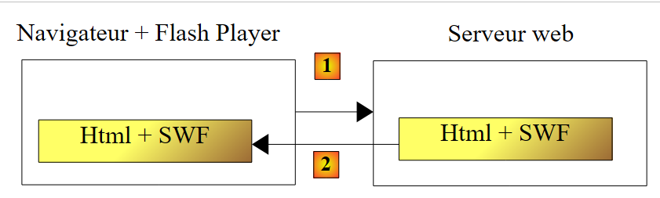
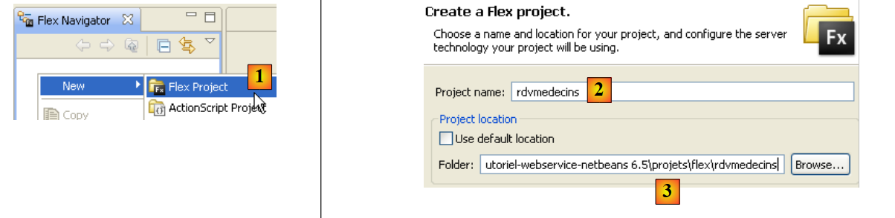
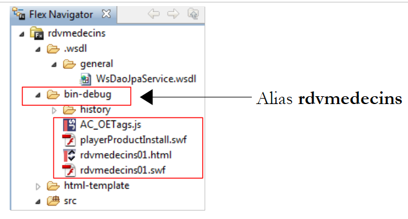
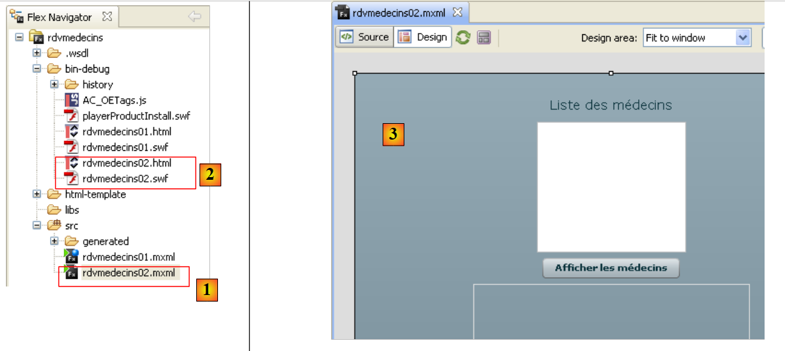

6. JEE 预约服务的 Flex 客户端
现在，我们将介绍两个用于 JEE 预约 Web 服务的 Flex 客户端。所使用的 IDE 是 Flex Builder 3。该产品的演示版可从以下网址下载：[https://www.adobe.com/cfusion/tdrc/index.cfm?loc=fr_fr&product=flex]。 Flex Builder 3 是一款基于 Eclipse 的集成开发环境（IDE）。此外，为运行 Flex 客户端，我们使用了 Wamp 工具 [http://www.wampserver.com/] 提供的 Apache Web 服务器。任何 Apache 服务器均可满足需求。显示 Flex 客户端的浏览器必须安装 Flash Player 9 或更高版本。
Flex 应用程序的独特之处在于它们在浏览器的 Flash Player 插件中运行。从这一角度来看，它们与 Ajax 应用程序相似，后者将 JavaScript 脚本嵌入发送到浏览器的页面中，然后在浏览器内执行。 Flex 应用程序并非通常意义上的 Web 应用程序：它是 Web 服务器所提供服务的客户端应用程序。从这一点来看，它类似于作为这些相同服务客户端的桌面应用程序。但有一点不同：它最初是从 Web 服务器下载到配备了能够运行它的 Flash Player 插件的浏览器中的。
与桌面应用程序类似，Flex 应用程序主要由两个要素组成：
- 展示层：即在浏览器中显示的视图。这些视图提供的丰富功能与桌面应用程序窗口相当。视图使用一种名为 MXML 的标记语言进行描述。
- 代码组件：主要处理用户在视图上操作所触发的事件。该代码既可以用 MXML 编写，也可以使用一种名为 ActionScript 的面向对象语言编写。必须区分两种类型的事件：
- 需要与 Web 服务器通信的事件：例如使用 Web 应用程序提供的数据填充列表、将表单数据提交至服务器等。Flex 提供了多种与服务器通信的方法，这些方法对开发者而言是透明的。这些方法默认是异步的：在服务器请求进行期间，用户可以继续与视图进行交互。
- 无需与服务器交换数据即可修改显示视图的事件，例如将树中的项目拖拽并放入列表中。此类事件完全在浏览器本地处理。
Flex 应用程序通常按以下方式执行：
 |
- 在 [1] 中，会请求一个 HTML 页面
- 在 [2] 处，该页面被发送出去。其中包含一个 SWF（ShockWave Flash）二进制文件，该文件包含整个 Flex 应用程序：所有视图及其事件处理代码。该文件将由浏览器的 Flash Player 插件执行。
 |
- Flex客户端通常在浏览器本地运行，除非需要外部数据。此时，它会向服务器发起请求[3]。随后在[4]处接收数据，数据格式可以是XML或二进制。被查询的Web服务器上的应用程序可以使用任何语言编写，关键在于响应格式。
我们已阐述了 Flex 应用程序的执行架构，以便读者能够清楚地理解它与不使用 Ajax 的传统 Web 应用程序（如前文所述的 Asp.Net 应用程序）之间的区别。在后者中，浏览器处于被动状态：它仅显示由 Web 服务器构建并发送至浏览器的 HTML 页面。
在接下来的章节中，我们将提供两个 Flex 客户端的示例，其唯一目的是展示 Web 服务客户端的多样性。由于笔者本人也是 Flex 初学者，某些要点可能未能得到应有的详细解释。
6.1. 首个 Flex 客户端
现在，我们将编写第一个 Flex 客户端来显示客户端列表。我们将实现的客户端/服务器架构如下：
 |
在此架构中，有两台 Web 服务器：
- 运行远程 Web 服务的 GlassFish 服务器
- 运行远程 Web 服务 Flex 客户端的 Apache 服务器
我们正在使用 Flex Builder 3 集成开发环境 (IDE) 构建 Flex 客户端：
 |
- 在 Flex Builder 3 中，在 [1] 处创建一个新项目
- 在 [2] 中为其命名，并在 [3] 中指定生成项目的文件夹
 |
- 在 [4] 中，为主要应用程序（即将被执行的程序）命名
- 在 [5] 中，生成后的项目
- 在 [6] 中，应用程序的主 MXML 文件
- MXML 文件包含一个视图及其对应的事件处理代码。[源代码] 选项卡 [7] 提供了对 MXML 文件的访问。在那里，您将看到描述视图的 <mx> 标签以及 ActionScript 代码。
- 可以通过 [设计] 选项卡 [8] 以图形化方式构建视图。随后，描述该视图的 MXML 标签会自动生成在 [源代码] 选项卡中。反之亦然：直接在 [源代码] 选项卡中添加的 MXML 标签也会在 [设计] 选项卡中以图形形式显示。
与之前的 C# 和 ASP.NET 客户端一样，我们将为远程 Web 服务 S [A] 生成本地 C 代理 [B]：
 |
要生成 C 代理，JEE Web 服务必须处于活动状态。
 |
- 在 [1] 中，选择“数据 / 导入 Web 服务”选项
- 在 [2] 中，选择用于生成 C 代理类和接口的文件夹。
 |
- 在 [3] 中，输入远程 Web 服务 S 的 WSDL 文件的 URI（参见第 4.10.2 节），然后继续下一步
- 在 [4] 和 [5] 中，由 [3] 中指定的 WSDL 文件描述的 Web 服务
- 在 [6] 中：将为 C 代理生成的方法列表。请注意，这些并非服务 S 的实际方法，它们的签名并不正确。在此，无论实际 Web 服务方法包含多少个参数，列表中的每个方法都仅有一个参数。该单一参数是一个类实例，其字段中封装了远程方法所期望的参数。
- 在 [7] 中：将生成代理 C 的类和接口的包
- 在 [8] 中：将作为远程 Web 服务代理的本地类名称
- 在 [9] 中：完成向导。
- 在 [10] 中：生成的 C 代理类和接口的列表。
 |
- 在 [11] 中：实现 C 代理方法的 [WsDaoJpaService] 类。
生成的 [WsDaoJpaService] 类实现了以下 [IWsDaoJpaService] 接口：
/**
* Service.as
* This file was auto-generated from WSDL by the Apache Axis2 generator modified by Adobe
* Any change made to this file will be overwritten when the code is re-generated.
*/
package generated.webservices{
import mx.rpc.AsyncToken;
import flash.utils.ByteArray;
import mx.rpc.soap.types.*;
public interface IWsDaoJpaService
{
//Stub functions for the getAllClients operation
/**
* Call the operation on the server passing in the arguments defined in the WSDL file
* @param getAllClients
* @return An AsyncToken
*/
function getAllClients(getAllClients:GetAllClients):AsyncToken;
....
function getAllClients_send():AsyncToken;
...
function get getAllClients_lastResult():GetAllClientsResponse;
...
function set getAllClients_lastResult(lastResult:GetAllClientsResponse):void;
...
function addgetAllClientsEventListener(listener:Function):void;
...
function get getAllClients_request_var():GetAllClients_request;
...
function set getAllClients_request_var(request:GetAllClients_request):void;
...
}
}
- 第 11 行：由 [WsDaoJpaService] 类实现的 [IWsDaoJpaService] 接口
- 第 19–31 行：为远程 Web 服务的 getAllClients() 方法生成的各种方法。其中唯一与 Web 服务实际暴露的方法高度匹配的是第 19 行中的方法。该方法名称正确，但签名不正确：远程 Web 服务的 getAllClients() 方法没有参数。
生成的 C 代理中 getAllClients 方法的唯一参数属于以下 GetAllClients 类型：
/**
* GetAllClients.as
* This file was auto-generated from WSDL by the Apache Axis2 generator modified by Adobe
* Any change made to this file will be overwritten when the code is re-generated.
*/
package generated.webservices
{
import mx.utils.ObjectProxy;
import flash.utils.ByteArray;
import mx.rpc.soap.types.*;
/**
* Wrapper class for a operation required type
*/
public class GetAllClients
{
/**
* Constructor, initializes the type class
*/
public function GetAllClients() {}
}
}
这是一个空类。这可能是因为目标方法 getAllClients 不接受任何参数。
现在，让我们检查一下为 Doctor、Client、Appointment 和 Time Slot 实体生成的类。例如，我们来看一下 Client 类：
package generated.webservices
{
import mx.utils.ObjectProxy;
import flash.utils.ByteArray;
import mx.rpc.soap.types.*;
public class Client extends generated.webservices.Personne
{
public function Client() {}
}
}
Client 类也是空的。它（第 7 行）继承自以下 Person 类：
package generated.webservices
{
import mx.utils.ObjectProxy;
import flash.utils.ByteArray;
import mx.rpc.soap.types.*;
public class Personne
{
public function Personne() {}
public var id:Number;
public var nom:String;
public var prenom:String;
public var titre:String;
public var version:Number;
}
}
- 第 11–15 行：这些是 JEE Web 服务中定义的 Person 类的属性。
现在我们已经有了 C 代理的主要元素，可以开始使用了。
客户端的主文件 [rdvmedecins01.xml] 如下所示：
<?xml version="1.0" encoding="utf-8"?>
<mx:Application xmlns:mx="http://www.adobe.com/2006/mxml" layout="vertical" creationComplete="init();">
<mx:Script>
<![CDATA[
import generated.webservices.Client;
...
// données
private var ws:WsDaoJpaService;
[Bindable]
private var clients:ArrayCollection;
private function init():void{
...
}
private function loadClients():void{
...
}
...
private function displayClient(client:Client):String{
...
}
]]>
</mx:Script>
<mx:Label text="Liste des clients" fontSize="14"/>
<mx:List dataProvider="{clients}" labelFunction="displayClient"></mx:List>
<mx:Button label="Afficher les clients" click="loadClients()"/>
<mx:Text id="txtMsgErreur" width="454" height="75"/>
</mx:Application>
在此代码中，应区分以下几个元素：
- 应用程序定义（第 2 行）
- 其视图的描述（第27–30行）
- <mx:Script> 标签内的 ActionScript 事件处理程序（第 3–26 行）。
首先，让我们来讨论一下该应用程序本身的定义及其视图的描述：
- 第 2 行：定义
- 视图容器内组件的布局。layout="vertical" 属性表示组件将上下排列。
- 在视图实例化完成时（即所有组件均已实例化）将执行的方法。属性 creationComplete="init();" 表示应执行第 13 行中的 init 方法。creationComplete 是 Application 类可触发的事件之一。
- 第 27–30 行定义了视图的组件
- 第 27 行：定义一个文本框
- 第 28 行：定义一个将存放客户列表的列表。dataProvider="{clients}" 标签指定了用于填充该列表的数据源。此处，列表将填充第 11 行定义的 clients 对象。为了能够写入 dataProvider="{clients}"，clients 字段必须具有 [Bindable] 属性（第 10 行）。 该属性允许在 <mx:Script> 标签外部引用 ActionScript 变量。clients 字段的类型为 ArrayCollection，这是一种 ActionScript 类型，允许存储对象列表——在本例中，即 Client 类型的对象列表。
- 第 29 行：一个按钮。其点击事件被处理。click="loadClients()" 属性表示当点击该按钮时，必须执行第 17 行中的 loadClients 方法。该按钮将触发向 Web 服务请求客户列表的操作。
- 第 30 行：一个文本框，用于显示服务器针对前一请求可能返回的任何错误消息。
第 27–30 行在 [设计] 选项卡中生成以下视图：
 |
- [1]：由第 27 行的 Label 组件生成
- [2]: 由第 28 行中的 List 组件生成
- [3]: 由第 29 行中的 Button 组件生成
- [4]: 由第 30 行 Text 组件生成
- [5]: 执行示例
现在让我们来查看该页面的 ActionScript 代码。这段代码负责处理视图的事件。
<mx:Application xmlns:mx="http://www.adobe.com/2006/mxml" layout="vertical" creationComplete="init();">
<mx:Script>
<![CDATA[
import generated.webservices.Client;
...
// données
private var ws:WsDaoJpaService;
[Bindable]
private var clients:ArrayCollection;
private function init():void{
// on instancie le proxy du service web
ws=new WsDaoJpaService();
// on configure les gestionnaires d'évts
ws.addgetAllClientsEventListener(loadClientsCompleted);
ws.addEventListener(FaultEvent.FAULT,loadClientsFault);
}
private function loadClients():void{
// on demande la liste des clients
ws.getAllClients(new GetAllClients());
}
private function loadClientsCompleted(event:GetAllClientsResultEvent):void{
// on récupère les clients dans le résultat envoyé
clients=event.result as ArrayCollection;
}
private function loadClientsFault(event:FaultEvent):void{
// on affiche le msg d'erreur
txtMsgErreur.text=event.fault.message;
}
private function displayClient(client:Client):String{
// on affiche un client
return client.nom + " " + client.prenom;
}
]]>
</mx:Script>
<mx:Label text="Liste des clients" fontSize="14"/>
<mx:List dataProvider="{clients}" labelFunction="displayClient"></mx:List>
<mx:Button label="Afficher les clients" click="loadClients()"/>
<mx:Text id="txtMsgErreur" width="454" height="75"/>
- 第 9 行：ws 指代类型为 WsDaoJpaService 的 C 代理，该类是之前生成的，实现了访问远程 Web 服务的方法。
- 第 13 行：当视图被实例化时（第 1 行），将执行 init 方法
- 第 15 行：创建 C 代理的实例
- 第 17 行：将一个事件处理程序与事件“异步 GetAllClients 方法已成功完成”相关联。 对于远程 Web 服务的任何方法 m，C 代理都实现了 addmEventListener 方法，该方法允许将事件处理程序与“异步方法 m 已成功完成”事件关联。此处第 17 行表示，当 Flex 客户端收到客户端列表时，必须执行第 26 行中的 loadClientsCompleted 方法。
- 第 18 行：将一个事件处理程序与事件“C 代理的某个异步方法以失败告终”相关联。此处，第 18 行表示，每当 C 代理向 Web 服务 S 发出的异步请求失败时，第 31 行处的 loadClientsFault 方法必须被执行。在此，唯一会发出的请求就是请求客户端列表的那个。
- 最终，第 13 行的 init 方法实例化了 C 代理，并为后续将发出的异步请求定义了事件处理程序。
- 第 21 行：点击 [显示客户端] 按钮（第 44 行）时执行的方法
- 第 23 行：执行代理 C 的异步 getAllClients 方法。该方法接收一个 GetAllClients 实例，该实例负责封装被调用远程方法的参数。此处没有参数，因此创建了一个空实例。getAllClients 方法是异步的，执行过程不会等待服务器返回的数据。特别是，用户可以继续与视图进行交互。 用户触发的事件将继续被处理。得益于 init 方法，我们知道：
- 当 Flex 客户端收到客户端列表时，将执行 loadClientsCompleted 方法（第 26 行）
- 如果请求出现错误，将执行 loadClientsFault 方法（第 31 行）
- 第 28 行：从事件中获取客户列表。 我们知道远程 Web 服务的 getAllClients 方法返回一个列表。我们将该列表赋值给第 11 行的 clients 字段。此处需要进行类型转换。由于第 43 行的列表与 clients 字段绑定，因此会收到数据已更改的通知。随后它将显示客户列表。它将使用 displayClient 方法（第 43 行）显示 clients 列表中的每个项目。
- 第 36 行：displayClient 方法接受 Client 类型的参数。它必须返回列表应为此客户显示的字符串。此处为姓名和姓氏（第 38 行）。
- 第 31 行：当 Web 服务请求失败时执行的方法。它接收一个 FaultEvent 类型的参数。该类有一个 `fault` 字段，用于封装服务器返回的错误。`fault.message` 是伴随该错误的错误信息。
- 第 33 行：错误消息将显示在为此目的提供的文本框中。
应用程序构建完成后，其可执行代码位于 Flex 项目的 [bin-debug] 文件夹中：
 |
上文中的
- 文件 [rdvmedecins01.html] 代表浏览器将向 Web 服务器请求以获取 Flex 客户端的 HTML 文件
- 文件 [rdvmedecins01.swf] 是 Flex 客户端二进制文件，它将被嵌入发送到浏览器的 HTML 页面中，随后由浏览器的 Flash Player 插件执行。
现在我们可以运行 Flex 客户端了。首先，我们需要设置其所需的运行时环境。让我们回到之前测试过的客户端/服务器架构：
 |
服务器端：
- 启动 MySQL 数据库管理系统
- 启动 GlassFish 服务器
- 如果尚未部署，请部署用于预约的 JEE Web 服务
- 可选：测试其中一个先前客户端，以验证服务器端一切就绪。
客户端：
启动将托管 Flex 应用程序的 Apache 服务器。此处我们使用 Wamp 工具。借助该工具，我们可以为 Flex 项目的 [bin-debug] 文件夹分配一个别名。
 |
- Wamp图标位于屏幕底部 [1]
- 左键单击 Wamp 图标，选择 Apache 选项 [2] / 别名目录 [3, 4]
- 选择 [5] 选项：添加别名
 |
- 在 [6] 中，为将要执行的 Web 应用程序指定一个别名（任意名称）
- 在 [7] 中，指定将使用此别名的 Web 应用程序的根目录：即我们刚刚构建的 Flex 项目的 [bin-debug] 文件夹。
让我们回顾一下 Flex 项目中 [bin-debug] 文件夹的结构：
 |
[rdvmedecins01.html] 文件是 Flex 应用程序的 HTML 文件。得益于我们刚刚为 [bin-debug] 文件夹创建的别名，可以通过 URL [http://localhost/rdvmedecins/rdvmedecins01.html] 访问该文件。我们需要在安装了 Flash Player 9 或更高版本插件的浏览器中访问此 URL：
 |
- 在 [1] 中，Flex 应用程序的 URL
- 在 [2] 中，我们请求客户端列表
- 在 [3] 中，当一切正常时获得的结果
- 在 [4] 中，当 Web 服务已停止运行时，我们仍请求客户端列表所获得的结果。
您可能想查看收到的 HTML 页面的源代码
页面主体从第 39 行开始。它不包含标准 HTML，而是一个类型为 "application/x-shockwave-flash"（第 60 行）的对象（第 47 行）。 该文件为 [rdvmedecins01.swf]（第 54 行），位于 Flex 项目的 [bin-debug] 文件夹中。这是一个大文件：仅此简单示例就约有 600 KB。
6.2. 第二个 Flex 客户端
第二个 Flex 客户端将不使用为第一个客户端生成的 C 代理。我们希望说明，尽管该方法比我们在此介绍的方法具有优势，但这一步并非必不可少。
该项目的演变过程如下：
 |
- 在 [1] 中，新的 Flex 应用程序
- 在 [2] 相关可执行文件中
- 在 [3] 新的视图中：我们将显示医生列表。
该应用程序的 MXML 代码 [rdvmedecins02.mxml] 如下：
<?xml version="1.0" encoding="utf-8"?>
<mx:Application xmlns:mx="http://www.adobe.com/2006/mxml" layout="vertical">
<mx:Script>
<![CDATA[
import mx.rpc.events.ResultEvent;
import mx.rpc.events.FaultEvent;
import mx.collections.ArrayCollection;
// données
[Bindable]
private var medecins:ArrayCollection;
private function loadMedecins():void{
// on demande la liste des médecins
wsrdvmedecins.getAllMedecins.send();
}
private function loadMedecinsCompleted(event:ResultEvent):void{
// on récupère les médecins
medecins=event.result as ArrayCollection;
}
private function loadMedecinsFault(event:FaultEvent):void{
// on affiche le msg d'erreur
txtMsgErreur.text=event.fault.message;
}
// affichage d'un médecin
private function displayMedecin(medecin:Object):String{
return medecin.nom + " " + medecin.prenom;
}
]]>
</mx:Script>
<mx:WebService id="wsrdvmedecins"
wsdl="http://localhost:8080/serveur-webservice-ejb-dao-jpa-hibernate/WsDaoJpaService?wsdl">
<mx:operation name="getAllMedecins"
result="loadMedecinsCompleted(event)" fault="loadMedecinsFault(event);">
<mx:request/>
</mx:operation>
</mx:WebService>
<mx:Label text="Liste des médecins" fontSize="14"/>
<mx:List dataProvider="{medecins}" labelFunction="displayMedecin"></mx:List>
<mx:Button label="Afficher les médecins" click="loadMedecins()"/>
<mx:Text id="txtMsgErreur" width="300" height="113"/>
</mx:Application>
我们仅对新功能进行说明：
- 第 42–45 行：新的视图。它与之前的视图完全相同，只是已调整为显示医生而非客户。
- 第 35–41 行：此处通过 <mx:WebService> 标签（第 35 行）描述了 Web 服务。此处不再使用上一版本中使用的 C 语言代理。
- 第 35 行：id 属性为 Web 服务指定了一个名称。
- 第 36 行：wsdl 属性指定 Web 服务 WSDL 文件的 URI。该 URI 与前一版本客户端所用的一致，并在第 4.10.2 节中定义。
- 第 37–40 行：使用 <mx:operation> 标签定义远程 Web 服务的方法
- 第 37 行：通过 name 属性定义被引用的方法。此处引用了远程方法 getAllMedecins。
- 第 38 行：我们定义了操作成功时（result 属性）和失败时（fault 属性）要执行的方法。
- 第 39 行：使用 <mx:request> 标签定义操作的参数。此处，远程方法 getAllMedecins 没有参数，因此留空。对于接受参数 param1 和 param2 的方法，我们会写为：
其中 param1 和 param2 是在 <mx:Script> 标签内声明并初始化的变量
在 <mx:Script> 标签内，有与前一个客户端中学习过的类似的 ActionScript 代码。唯一的区别在于第 13–16 行中的 loadMedecins 方法。不同之处在于调用远程方法 [getAllMedecins] 的方式：
- 第 15 行：我们使用了第 35 行定义的 Web 服务 [wsrdvmedecins] 及其第 37 行定义的操作 [getAllMedecins]。为执行此操作，使用了 send 方法。它会发起对第 35 行定义的 Web 服务中 getAllMedecins 方法的异步调用。 send 方法将使用第 39 行 <mx:request> 标签中定义的参数进行调用。此处没有参数。如果该方法有 param1 和 param2 两个参数，loadMedecins 脚本会在调用 send 方法之前为这些参数赋值。
接下来只需测试这个新应用程序：
 |